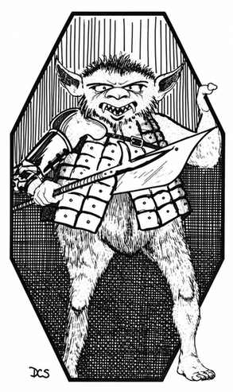
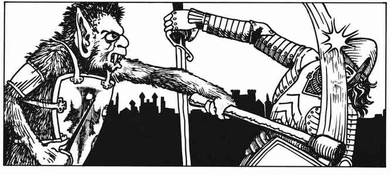

熊地精 · Bugbear
 |
|

熊地精通常以松散的小群体生活，常与地精出没在相同地区。与体型较小的同族不同，这些长毛的大型地精无论在明亮日光下还是彻底黑暗中都能行动自如（拥有 60 尺红外视觉），因此既会选择地表栖居，也会居住在地下。
若遇到 12 只或更多熊地精，其中会有一名首领：22–25 点生命值，护甲等级 4，按 4 个生命骰的怪物进行攻击，伤害 +1。若遇到 24 只或更多，还会额外出现一名酋长和一名副酋长。酋长护甲等级 3，有 28–30 点生命值，按 4 个生命骰的怪物进行攻击，伤害 +2；副酋长与首领相同。若在巢穴中遇到熊地精，必定有酋长和副酋长；雌性与幼体的数量各相当于雄性的 50%。除非性命受到威胁，否则雌性和幼体不会战斗；若被迫战斗，雌性按大地精的能力战斗，幼体则按狗头人的能力战斗。
熊地精会携带各种武器，从剑到钉有尖刺的木棒（晨星）都有。他们也常携带长矛，并倾向于将长矛、斧、钉头锤和战锤当作投掷武器使用。熊地精力量很大，能将这些武器投掷至 4 寸远；不足 2 寸的距离视为中程。
熊地精看起来笨拙，步态蹒跚，实际上行动迅速、擅长潜行，因此有 50% 的概率使对手遭遇突袭。除了自己的种族语和阵营语，他们也会说地精语与大地精语。
外貌 · Description
熊地精的皮肤呈浅黄色至黄褐色，通常是暗黄；毛发从无光泽的棕褐色到砖红色不等。眼白泛绿，瞳孔为红色。他们身穿的零散护甲，以及披挂的布料、兽皮和毛皮，往往都肮脏破旧、疏于打理。熊地精的寿命约为 75 年。